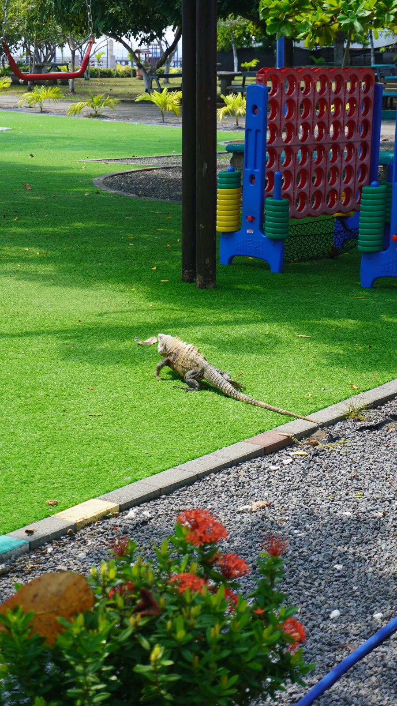
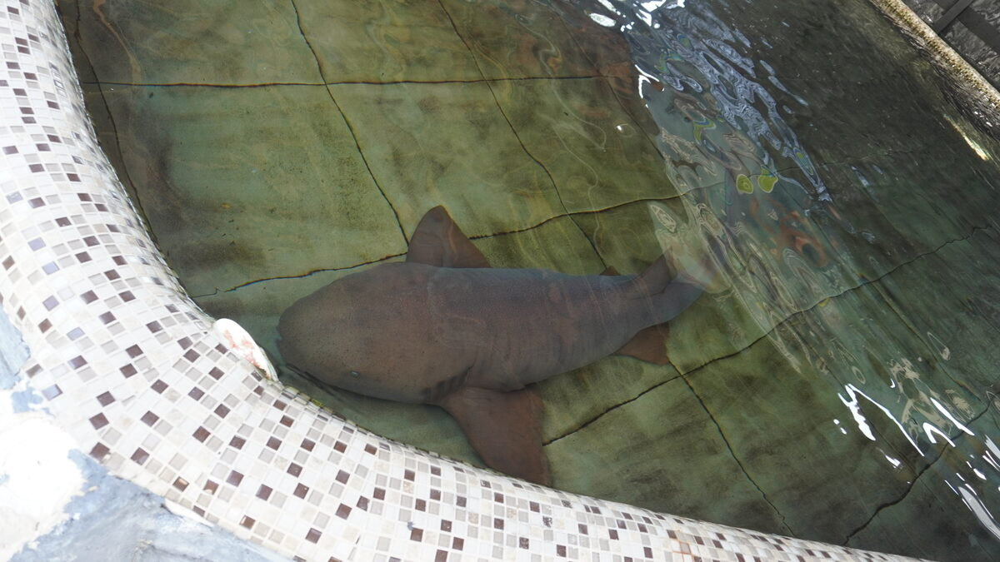

Cerrando el ciclo más grande de mi vida
Julio de 2016
Algún viernes o sábado de finales de julio de 2016 estaba yo, como siempre, en un evento de tecnología; esta vez en La Antigua Guatemala, de impresión 3D y emprendimiento. Uno de mis mejores amigos, Sebas, estaba dando el taller. Me regresé a las 2 de la tarde porque tenía partido a las 3: tenía 30 minutos para llegar a mi casa por los tarugos y el uniforme, y caminar otros 15 al estadio. En ese tiempo andaba con un frijolito (uno de esos teléfonos que no eran inteligentes y solo servían para llamar; la verdad, ahora se me vuelven a antojar), así que la única manera de contactarme era llamándome, y poca gente tenía mi número.
Me bajé de la camioneta en la parada de Santa Lucía y caminé hacia la casa donde vivía entonces, a unos 500 metros. En eso se para un carro: era el tío de un primo, amigo de la familia, de esos que solían hacer bromas pesadas. Iban su esposa y la nena.
—Colocho, ¿a dónde vas?
—A la casa, que tengo que ir a jugar.
Se me quedó viendo sorprendido y se hizo un silencio incómodo. Entonces me dijo:
—Mira, tu hermano se murió ahogado en el lago.
Yo, sin entender lo que me estaba diciendo, pensé: «Ahh, es una de sus bromas». Como siempre, no le creo nada a nadie JAJAJA. Le dije que acababa de venir, que nadie me había llamado ni dicho nada, y que iba a ir allá arriba a preguntar.
—Ah, bueno. Cualquier cosa me llamas, aquí estamos.
—Sí, gracias.
Pasé por la casa del que, según yo, era uno de mis mejores amigos JAJAJA (él dice que no, pero como esta historia la cuento yo, digo que sí).
—¡JUAAAAAAAANJOOOOO! —grité, como siempre.
Salió y le dije:
—Vos, dicen que Hanz se murió.
—Sí, vos. Me acaban de llamar para ver si sabía algo. Me dijeron: «Mire, no sabemos si es cierto, pero sabemos que ustedes eran muy unidos, y al parecer se murió en el lago».
Los dos nos quedamos extrañados. Le pedí que me acompañara y nos fuimos a la casa de mi abuela. Hay una subida bien pronunciada, y en el camino se pararon como tres personas a darme el pésame. Yo seguía sin entender.
Marzo de 2017
Mi primer viaje a Costa Rica fue la semana del 14 de marzo de 2017, con 300 dólares ahorrados: gasté 140 en boletos y llevaba el resto en colones. Dos días antes le hablé a un amigo que recién había conocido porque salimos juntos en Forbes:
—Mae, vea, ¿me da posada en su casa?
—Sí, véngase.
—Ok, llego en dos días.
Yo ya tenía todo comprado, y sabía en mi corazón que me iba a decir que sí.
Fui a Costa Rica a huir de la soledad, de la tristeza, del vacío que dejó mi hermano ocho meses antes. Fue mi primer viaje en avión de forma consciente. Conocí Carrizal, San José, La Sabana, el estadio gigantesco que está en ese mismo parque, y poco más. Mi equipaje era un par de playeras, unos pantalones, un cuaderno, un lapicero y unas fotos.
Pasé mi cumpleaños número 22 en Costa Rica con una familia que para mí era desconocida, pero que en esos tres días me trató como uno más. Compramos un queque (pastel, en costarricense) y, por primera vez en más de ocho meses, se me olvidó que estaba triste.
La segunda vez fue en julio, para dar un taller en el ECSL (Encuentro Centroamericano de Software Libre), en la Universidad de Costa Rica. Lo bonito fue que llegó Lexo, uno de mis mejores amigos (después nos peleamos JAJAJA): lo fui a traer, nos fuimos a dar charlas y estuvo genial.
2026
De ahí me salto hasta este año. Hace unos meses vivía en Xela y pensaba en lo difícil que sería volver a salir del país: por el dinero, porque uno cambia, las personas cambian y la pandemia nos dejó un gran agujero en el corazón. Habíamos hablado con amigos de toda Centroamérica, pero no se veía nada concreto. Yo sí quería, tenía el deseo, pero como muchas veces, me faltaba convicción para hacerlo por mis propios medios, para perseguir mis sueños y dirigirlos.
En febrero llegó una noticia: «Mirá, vamos a hacer un humanoide para una empresa». Y yo: «Ay, no chinguen JAJAJA, qué pereza, es un montón de trabajo, no quiero». Se me pasó el berrinche y dije que bueno. El humanoide llegó en abril y teníamos tres días para armarlo y presentarlo en un evento de tecnología. No dormimos esos tres días, y gracias a Claude me volví experto en IA en tres días y tres noches. En ese evento nos invitaron a El Salvador a presentar a Hermes, y dijimos: ¿por qué no? Volver a El Salvador después de siete años se sintió como la primera vez, pero esta vez fui yo manejando: mi primera vez manejando fuera del país, y mi primera vez manejando tanto.
Por esos meses pasé a ver a mi mamá y me preguntó:
—¿Y te están pagando bien ahí donde trabajas?
¿Cómo le explico que soy socio y que soy yo el que paga? JAJAJA.
—Sí, sí, claro.
Pero le expliqué que este trabajo me permite un estilo de vida más relajado: trabajo mucho por poco tiempo y el resto del mes paso más tranquilo, así que puedo hacer más cosas. Y así estoy bien, porque sé que cuando empiece a trabajar como sé trabajar no voy a parar, entonces estoy aprovechando.
En junio estábamos hablando con José y otros amigos, y José soltó:
—Quiero irme a Costa Rica en bicicleta.
Y yo: «Ahh, qué perro, interesante». En septiembre volvimos a hacer un hackatón juntos y la idea ya iba más en serio, así que le dije:
—Bueno, vamos. Yo voy en el carro y te voy cuidando.
Dicho y hecho.
En octubre le avisé a la señora que me alquilaba que me iba en tres días y que le dejaba todo limpio. Empecé a empacar el jueves, seguí el viernes, y el sábado en la mañana ya estábamos metiendo todo en el camión y limpiando para irme oficialmente de Xela. Las cosas se fueron a la casa de mi abuela; yo salí a las 3 de la tarde y llegué a las 7, solo a dormir, sacar la ropa para el viaje y salir temprano a la capital y a La Antigua. Ahí empieza la ruta de todo este blog.
10 de noviembre: Puntarenas → San José
Y así llegamos a hoy. Salimos de Puntarenas rumbo a San José, pero antes pasamos al Parque Marino del Pacífico. Sí, el que estaba cerrado ayer JAJAJA. Hoy sí abrió, y soy tan feliz viendo animales. Les dejo unas fotitos:








José salió de la playa del faro a pedalear y... ¿adivinen qué pasó? JAJAJA. Como la dinámica es dejarlo pedalear y esperarlo más adelante, lo esperé frente a la sede de la UCR en Puntarenas, y pum: me sale una alerta de presión baja en las llantas. Me bajé, las vi y dije: «Ahh, aguantan». Y sí aguantaron, otros 10 km más o menos.
José terminó sus 20 km, subimos la bicicleta, se subió al carro y pum: la llanta se desinfló por completo.
Pusimos la de repuesto y resulta que también estaba desinflada JAJAJA. Pasamos de 80 km/h a 5 y nos fuimos despaciiiito hasta un lugar donde aparentemente cambiaban llantas, y nel: era un taller mecánico, y ni siquiera nos hicieron el paro de echarle aire. Al final encontramos dónde arreglarla; en Costa Rica se llaman llanteras, en Nicaragua vulcanizadoras y en Guatemala pinchazos. PEEEEEEEEERO no teníamos efectivo :)

Nos cobraron 2,700 colones y, si han estado al día con el blog, se acordarán de los 4,000 colones que me sobraron del cajero en la frontera. Por fin sirvieron: pagué el pinchazo y nos fuimos.
Pasamos por carreteras muy bonitas, de esas que uno espera al llegar a Costa Rica, y vimos cosas bien interesantes, como las presas (así les dicen aquí a los embotellamientos) y los peajes: la carretera va de dos carriles, llega el peaje, se abre a diez solo para cobrar y luego vuelve a bajar a uno. Me pareció tan surreal JAJAJA.
Llegamos a casa de la amiga de José, nos acomodamos y bajamos las cosas. Íbamos a cenar cuando el novio nos dice:
—Bueno, voy a ir a la municipalidad, ¿quieren ir?
Y yo, después de manejar tres horas:
—Sí, vamos JAJAJAJA.
Terminé en la asamblea de la Municipalidad de Alajuelita JAJAJAJA.
Regresamos a la casa, platicamos hasta como las 12 y nos dormimos como a la 1. A la mañana siguiente nos contaron que, mientras yo dormía, LA POLICÍA llegó a la casa a ver quiénes éramos y qué hacíamos ahí JAJAJA. Los amigos de José lo resolvieron, y a mí solo me tocó la anécdota.
Entrar a San José significa mucho para mí, porque llegué diez años después. Menos triste, menos joven. Ya no soy el patojo chispudo que era antes, pero soy el ingeniero que diseña robots. Ya no soy el chico que da charlas: soy el que organiza eventos e invita a más gente, incluso en otros países. Ya no soy el miedoso que no sabía qué hacer: soy el miedoso que cree saber lo que quiere, y que anda en Costa Rica para cumplir su sueño de tener una empresa multinacional.
La muerte de mi hermano ya no duele como hace diez años. Duele menos, pero no deja de doler: el vacío, la soledad, la vida se siente diferente. Esta vez no vengo solo, vengo con José, que se parece un poco a mi hermano, porque no tenemos filtros y no sabemos medir riesgos. Pero también se parece a mí, o a como quiero ser cuando sea grande.
José me recuerda que hay que hacer cosas por el simple motivo de hacerlas. Como hace diez años, cuando le decía a mi hermano: «Wey, vamos a jugar pelota a las 2 de la mañana a las canchas, y de paso encendemos las luces, que para eso se pagan los impuestos». Y ahí íbamos un grupo de pendejos a las 2 de la mañana a jugar pelota, porque se podía, porque mi pueblito era un lugar seguro.
José no es Hanz, José no es Yeffri, José es José. Pero me recuerda lo que en su momento había dejado de lado.
Así terminamos el viaje de ida, de Guatemala a Costa Rica: 1,366 km en 17 días. Estas semanas van a ser complicadas y muy ajetreadas, pero aquí estamos, y miedo no tenemos.
Gracias por leerme hasta aquí. Si me leyeron, me gustaría que me lo dijeran, para saber quiénes me acompañaron en todo este trayecto. Los tkm, y nos vemos en Guatemala el 25.
👆 Toca o haz clic en cualquier punto del mapa para leer el capítulo de ese día.